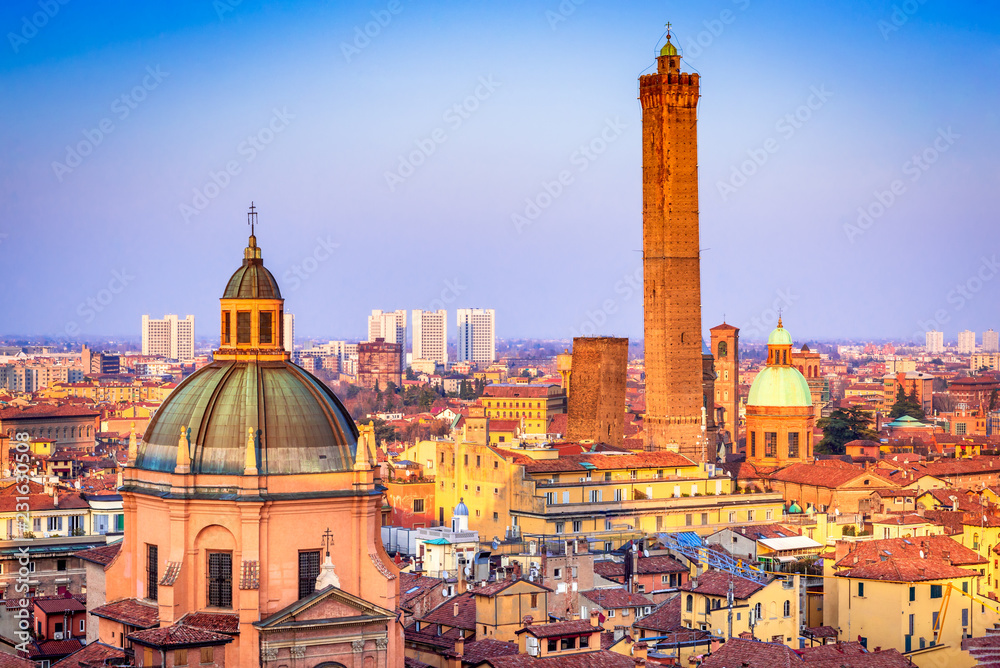
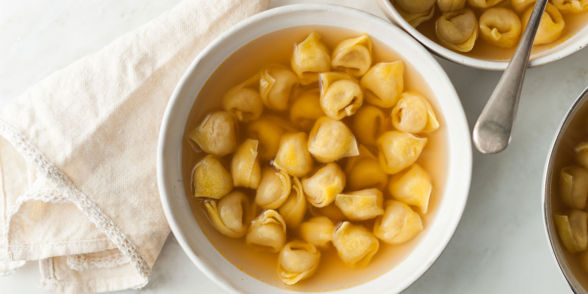

EMILIA ROMAGNA

Emilia Romagna – La patria dei sapori ricchi e autentici
La cucina emiliana è un inno alla ricchezza degli ingredienti locali e alla maestria artigianale.
Conosciuta per i suoi prodotti DOP come il Parmigiano Reggiano, il prosciutto di Parma e l’Aceto Balsamico di Modena,
offre piatti generosi come i tortellini, le lasagne e i bolliti misti. È una cucina di tradizione, capace di coniugare gusto, qualità e convivialità
SPECIALITA'

LASAGNE ALLA BOLOGNESE
Descrizione:
Le lasagne alla bolognese sono un classico della cucina emiliana, composte da strati di pasta all’uovo fresca,
intervallati da un ricco ragù di carne, besciamella cremosa e una generosa spolverata di Parmigiano Reggiano.
Cotte al forno, sono un piatto ricco e confortante, perfetto per occasioni speciali.
Curiosità:
La ricetta tradizionale prevede un ragù a cottura lenta, preparato con carne di manzo e maiale, soffritto di verdure, pomodoro e vino bianco.
È uno dei piatti più celebri e imitati della cucina italiana.

TORTELLINI IN BRODO
Descrizione:
I tortellini sono piccoli pasta ripiena di un mix di carne, prosciutto e Parmigiano Reggiano, serviti tradizionalmente in un caldo brodo di carne.
Rappresentano un piatto tipico delle feste e dei pranzi in famiglia, con un gusto delicato e avvolgente.
Curiosità:
Secondo la leggenda, la forma del tortellino è ispirata all’ombelico di Venere, vista durante una notte a Castelfranco Emilia, in provincia di Modena.
Per questo sono anche chiamati “ombelichi di Venere”.
GNOCCO FRITTO (o Crescentina)
Descrizione:
Lo gnocco fritto, chiamato anche crescentina, è un impasto di farina, acqua e lievito, lievitato e fritto fino a diventare gonfio e dorato.
Viene servito caldo, accompagnato da una selezione di salumi (come prosciutto crudo e coppa) e formaggi tipici emiliani, creando un mix irresistibile di sapori e consistenze.
Curiosità:
Tradizionalmente preparato per le feste o le occasioni speciali, lo gnocco fritto è una vera e propria “coccola” emiliana, perfetto da condividere in compagnia.
CARTA DEI VINI
LAMBRUSCO
Descrizione:
Il Lambrusco è un vino rosso frizzante tipico dell’Emilia-Romagna, noto per la sua freschezza e vivacità.
Caratterizzato da profumi fruttati di ciliegia, fragola e lampone, può essere prodotto in versioni secche o amabili, sempre con un gusto leggero e rinfrescante.
È perfetto per accompagnare piatti ricchi e saporiti tipici della tradizione emiliana.